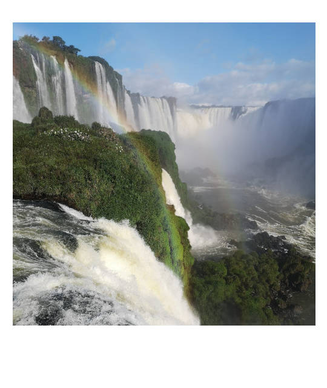
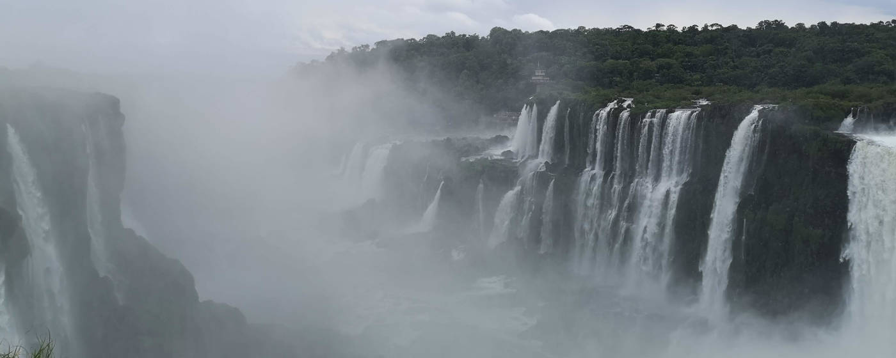
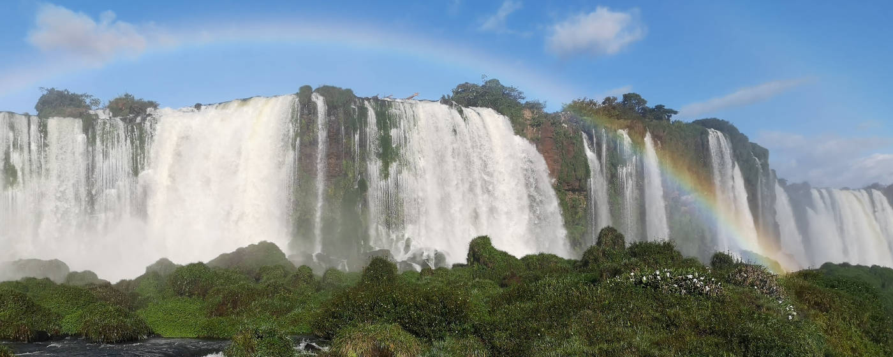
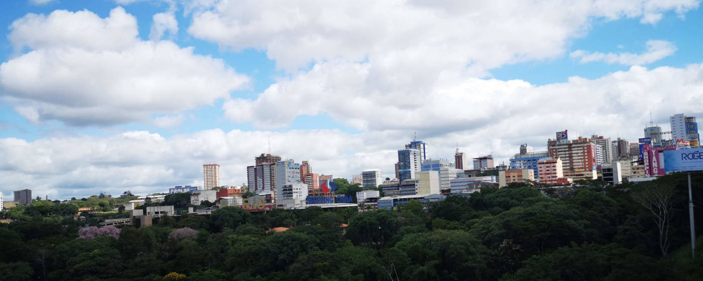
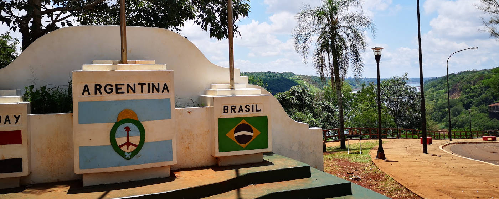
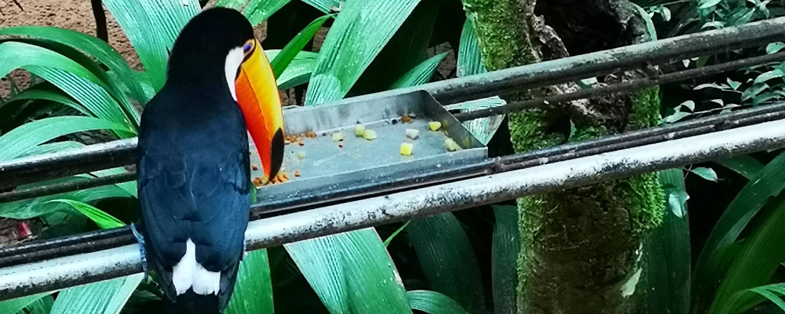
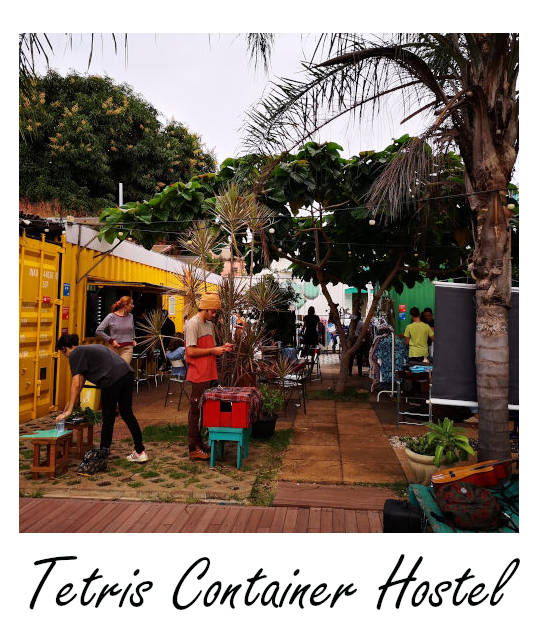

Die Wasserfälle
Es gibt die
„Big Three“ der größten Wasserfälle der Welt,
doch es ist schwer zu sagen, was ist denn nun der größte
Wasserfall der Welt. Wenn man die Breite eines Wasserfalles
misst, dann führen die Cataratas del Iguazú mit einer Breite von
2700 m die Liste vor den Niagara- und den Victoria Fällen an.

Die Iguazú Wasserfälle, welche zum
UNESCO Weltnaturerbe zählen, bestehen aus
20 größeren sowie 255 kleineren Wasserfällen,
wobei sie eine Wasserfallkante von 2,7 Kilometer überspannen.
900 Meter dieser Kante werden nicht von Wasser überspült. Der
höchste Wasserfall ist 82 Meter hoch, jedoch stürzt die Mehrzahl
an Wasserfällen nur 64 Meter in die Tiefe. Die Iguazú
Wasserfälle liegen auf der Grenze zwischen Brasilien und
Argentinien.
Das Highlight der Iguazú Wasserfälle ist die Teufelsschlucht, in
Spanisch auch Garganta del Diablo genannt, die 700 m lang und
150 m breit ist. Da diese primär auf argentinischer Seite liegt,
kann man die Wassermassen auf argentinischer Seite aus nächster
Nähe betrachten, jedoch hat man von der brasilianischen Seite
eine bessere Gesamtsicht auf die Teufelsschlucht.
Bei Sonnenschein entstehen aufgrund der Gischt tausende
Regenbögen
und die Wasserfälle schauen aus wie aus einer anderen Welt.
Ein Besuch beider Seiten ist zu empfehlen, da die Erlebnisse
sehr unterschiedlich sind.
ToDo

1. Besuch der argentinischen Seite der Iguazú Wasserfälle
Auf der argentinischen Seite kommt man direkt an die Wasserfälle
heran und man schaut in der Teufelsschlucht, wie das Wasser in
atemberaubende Tiefen fällt. Dabei wird man oft auch selbst
etwas nass. Da das Wetter jedoch zumeist drückend heiß ist,
kommt die Erfrischung sehr gelegen. Es gibt in diesem Teil des
Parks mehrere Rundwanderwege, welche einem die Sicht von
unterschiedlichen Ebenen auf die Wasserfälle bieten. Das
Highlight ist der Steg über den Teufelsschlund, der einen auf
einen kleinen Vorsprung des Wasserfalls führt, von wo man die
Kraft des Wassers bestaunen kann.
Puerto Iguazú und Foz de Iguacu
Wenn man erstmals nach Iguazu sucht, findet man häufig zwei
verschiedene Schreibweisen von Iguazu, was daran liegt, dass
es eine Stadt Iguazu auf brasilianischer und auf
argentinischer Seite gibt. Puerto Iguazu liegt in
Argentinien und sollte man zuvor in Argentinien gewesen
sein, bietet es sich an nach Puerto Iguazu einen Flieger zu
buchen. Foz de Iguacu ist die Stadt auf brasilianischer
Seite und besitzt einen Flughafen, der die Stadt mit den
Metropolen Brasiliens verbindet.
Insgesamt sollte man bei seinem Besuch der argentinischen Seite
die drei Pfade Paseo Inferior, Paseo Superior und den Pfad
Garganta del Diablo (Teufelsschlucht) erkunden. Um zur
Teufelsschlucht zu gelangen, muss man den Tren Ecológico nehmen,
welcher im Preis inbegriffen ist. Die auf den Schildern im Park
angezeigten Wegzeiten sind sehr großzügig geschätzt, sodass man
innerhalb von einem Tag ausreichend Zeit hat, alle Bereiche der
argentinischen Seite des Parks zu erkunden. Eine Karte der
unterschiedlichen Wege findest du
hier
Zusätzlich gibt es die Möglichkeit, Bootstouren nahe den
Wasserfällen zu machen. Man kann sich zwischen einer Speedboat
Tour, bei der man auf jeden Fall nass wird, und einer
gemütlichen Schlauchboottour entscheiden. Anbieter für beide
Touren ist
Iguazú Jungle. Die Tickets für die Tour können auch neben dem
Besucherzentrum gekauft werden.
Die Iguazú Wasserfälle sind das ganze Jahr über von 8 bis 18 Uhr
geöffnet. Der Ticketverkauf endet um 16:30 Uhr. Beim Eintritt
muss der Reisepass vorzeigt werde: Somit diesen nicht vergessen
mitzunehmen. Der Eintritt lag zuletzt bei 800 ARS (Stand Juli
2020). Um zum Park zu gelangen kann man von der Stadt Puerto
Iguazú einen öffentlichen Bus nehmen. Die Busse mit der
Aufschrift CATARATAS fahren alle zwanzig Minuten vom Busbahnhof
in der Stadtmitte ab. Ein Busticket kann an den kleinen
Schaltern am Busbahnhof vor Ort gekauft werden. Es ist
ausreichend, wenn man an einem der Schalter nach Cataratas fragt
und man wird zum richtigen Verkaufschalter geschickt.
♦ ♦ ♦

2. Besuch der brasilianischen Seite der Iguazú Wasserfälle
Während man auf der argentinischen Seite sehr nah an die
Wasserfälle herankommt, bekommt man von der brasilianischen
Seite die Möglichkeit, die Iguazú Wasserfälle in ihrer
Gesamtheit zu bewundern. Es gibt keine langen Rundwanderwege,
doch die Aussicht von der in die Schlucht reingebaute
Aussichtsplattform ist atemberaubend. Nachdem man den Eintritt
bezahlt hat, fährt man zuerst mit dem Bus bis zum Beginn des
kurzen Rundwanderweges, von dort geht man entlang von Stegen zu
verschiedenen Aussichtspunkten. Im Anschluss fährt man mit einem
Aufzug auf eine höhere Aussichtsplattform und von dort wird man
dann auch von einem Bus wieder abgeholt. Insgesamt braucht man
für die brasilianische Seite nicht mehr als einen halben Tag
einplanen.
Der Eintritt der brasilianischen Seite des Parks beträgt 72
Reales und kann mit Kreditkarte bezahlt werden (Stand August
2020). Die Öffnungszeiten sind von 9 bis 17 Uhr und der Park ist
täglich ganzjährig geöffnet.
Wenn man seine Unterkunft auf der argentinischen Sete hat, kann
man einen Tagesausflug nach Brasilien und den Iguazú
Wasserfällen auf dieser Seite machen. Dazu gibt es Busse, die am
Busbahnhof in Puerto Iguazú abfahren und regelmäßig die Grenze
kreuzen. Es ist beim Grenzübergang notwendig, sich einen
Ausreisestempel aus Argentinien und den Einreisestempel in
Brasilien zu holen. Dazu macht der Bus einen kurzen Halt an der
Grenze. Da allerdings Brasilianer die Grenze ohne Grenzkontrolle
kreuzen können, muss man im Gegensatz zu den meisten Menschen im
Bus, den Bus dort verlassen, die Immigration durchlaufen und
dann auf den nächsten Bus warten. Dieser bringt einen dann bis
nach Foz de Iguacu, von wo man einen Bus zum Nationalpark
besteigen kann. Auf dem Rückweg muss der gleiche
Immigrationsprozess nur in umgekehrter Richtung durchlaufen
werden.
♦ ♦ ♦

3. Besuch des Shopping-Paradieses Ciudad del Este (Paraguay)
Ciudad del Este ist dreckig, groß, überall versuchen Menschen
einen zum Kauf von allem Möglichen zu überzeugen. Wenn man durch
die Straßen läuft, kommt fast ein Gefühl wie in asiatischen
Großstädten auf, südamerikanischen Charme sucht man dort
vergebens. Doch die Preise für Elektronik und allem anderen was
dort verkauft wird, sind wahrscheinlich die besten in ganz
Südamerika. Allerdings darf man, um die günstigen Preise zu
erhalten, das Handeln oft nicht vergessen.
Ein Grenzübertritt ist nur von brasilianischer Seite möglich,
allerdings gibt es Busse auch vom Busbahnhof in Puerto Iguazú
auf argentinischer Seite, die einen direkt zur Grenze von
Paraguay bringen. Für einen Tagestrip zur Ciudad del Este sind
keine Einreisestempel nach Paraguay notwendig, jedoch bietet
sich der Besuch der Stadt an, um ein paar mehr Stempel im
Reisepass zu sammeln.
♦ ♦ ♦

4. Besuch des Dreiländereckes auf argentinischer Seite
Man stehe in Argentinien, hat die Flussabzweigung zwischen dem
Rio Paraná und dem Rió Iguazú vor sich, die Landmasse auf der
einen Seite gehört zu Paraguay, man schaue nur ein kleines Stück
weiter rechts und man blickt auf Brasilien. Um die Freundschaft
der drei Länder zueinander zu würdigen, gibt es genau an dieser
Stelle den Tres Fronteras Park, wo es abends nach
Sonnenuntergang eine Wassershow gibt. Besonders schön anzusehen
und ein Foto wert ist das Monumento Tres Banderas, welches mit
den drei Landesflaggen die Lage dieses Ortes noch hervorhebt.
Das Dreiländereck liegt ein wenig außerhalb der Stadt Puerto
Iguazú, allerdings in Laufdistanz. Die Distanz vom Busbahnhof
bis zum Dreiländereck beträgt 2,5 km und entspricht einem
gemütlichen Spaziergang.
♦ ♦ ♦

5. Parque Das Aves – Vogelpark in Foz de Iguacu
Iguazu, gleich welche Seite, liegt mitten im Dschungel und
dementsprechend gibt es auch eine Vielzahl von tropischen Vögeln
in dieser Gegend: Vom Tukan, über Papageien zu wunderschönen
rosa Flamingos. In dem Parque Das Aves, einer Aufzucht und
Auffangstation für Vögel in Foz de Iguacu, kann man alle diese
wunderschönen und ausgefallenen Vögel in einem großzügig
angelegten Park bestaunen.
Der Park ist Dienstag bis Sonntag von 8:30 bis 17 Uhr geöffnet.
Für den Eintritt bezahlt man derzeitig 60 Reales (August 2020).
Um zum Park zu gelangen, muss man den Bus in Puerto Iguazú nach
Foz de Iguacu nehmen, inklusive dem Immigrationsprozess, und
dann von Foz den Iguacu noch einmal einen weiteren Bus bis zum
Park.
♦ ♦ ♦
Zielgruppe
Jeder der Naturspektakel liebt, sollte einmal im Leben zu den
Iguazú Wasserfällen fahren. Als eines der neuen sieben
Weltwunder der Natur bieten die im spanischen auch Cataratas
genannten Wasserfälle ein Highlight jeder Argentinienreise. Nur
anderthalb Flugstunden von Buenos Aires entfernt, bietet Iguazú
ein Ziel für einen perfekten Wochenendausflug von der Hauptstadt
aus.
Reisezeit
Die Hauptreisezeit ist von November bis Mai. Der Januar und
Februar sind allerdings nicht zu empfehlen, da dann Sommerferien
in Argentinien und Brasilien sind und somit auch viele heimische
Besucher die Iguazú Wasserfälle besuchen. Zusätzlich ist es in
dieser Zeit besonders heiß und schwül, sodass der Besuch eine
schweißtreibende Angelegenheit wird. Die Monate November, April
und Mai empfehlen sich daher am besten für den Besuch.
Klima
Das Klima in der Region der Iguazú Wasserfälle ist feucht und
subtropisch. Das ganze Jahr über hat man warme Temperaturen,
wobei der Hochsommer im Januar und Februar sehr heiß werden
kann. Regen kann es das ganze Jahr über geben und die Anzahl der
Regentage sind annähernd gleichmäßig über das Jahr verteilt. Für
den Fall, dass man einen Regentag erwischt, empfiehlt es sich
immer einen Reservetag in der Region einzuplanen.
An- und Abreise
Von Buenos Aires aus gibt es die Möglichkeit, mit dem Flugzeug
oder dem Bus anzureisen. Der Bus braucht ungefähr 20 Stunden für
die Strecke, sodass sich der Kauf eines Flugtickets lohnt.
Aufgrund von zahlreichen Billigairlines sollte man von Buenos
Aires aus ein Flugticket Return für ungefähr 100 Euro bekommen.
Vom Flughafen in Puerto Iguazu gibt es einen Shuttlebus in die
Stadt, welche ungefähr eine halbe Stunde Fahrt entfernt liegt.
Die Bustickets werden in der Ankunftshalle verkauft.

Unterkunft
Auf der argentinischen Seite in Puerto Iguazú lädt das Hostel
Iguazú Falls, welches einen Pool hat, zu einem schönen
Aufenthalt in zentraler Lage des Dorfes ein.
In Foz de Iguacu auf brasilianischer Seite sind die Hostels
Concept Design Hostel & Suites und das Tetris Container
Hostel Hostel zu empfehlen. Das Concept Design Hostel & Suites
ist ein sehr sauberes Hostel mit Pool und toller Küche. Das
Tetris Container Hostel ist ein sehr soziales Hostel, wo man
leicht andere Reisende kennenlernt und welches eine sehr gute
Happy Hour an der Bar hat.
Bordercrossing zwischen Argentinien, Brasilien und Paragruay
Beim Bordercrossing zwischen Brasilien und Argentinien muss man
darauf achten, dass man jeweils Aus- und Einreisestempel der
entsprechenden Länder bekommt. Einheimische können die Grenze
ohne Immigration überschreiten, sodass man sich nicht von diesen
verführt fühlen sollte, einfach an der Grenze mit den Anderen im
Bus sitzen zu bleiben. Normalerweise fährt an der
brasilianischen Grenze der Bus ohne einen weiter und man muss
auf den folgenden Bus warten (Wartezeit sollte nicht länger als
30 Minuten sein).
An der Grenze zwischen Paraguay und Brasilien ist stets ein
reges Treiben und für einen kurzen Besuch in Ciudad del Este
kann man auch ohne Immigration die Stadt besuchen. Allerdings,
sollte man in Paraguay bleiben, sind ein Ausreisestempel aus
Brasilien und ein Einreisestempel in Paraguay Pflicht, da man
ansonsten große Probleme bei der Ausreise an anderen
Grenzübergängen in Paraguay bekommen kann.


{kind=link}